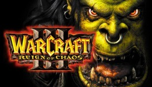
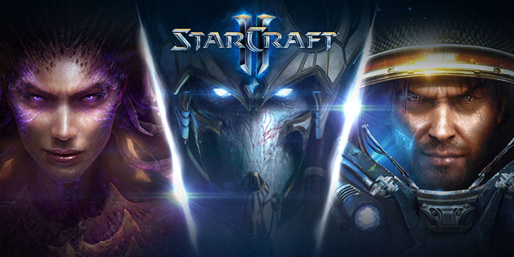
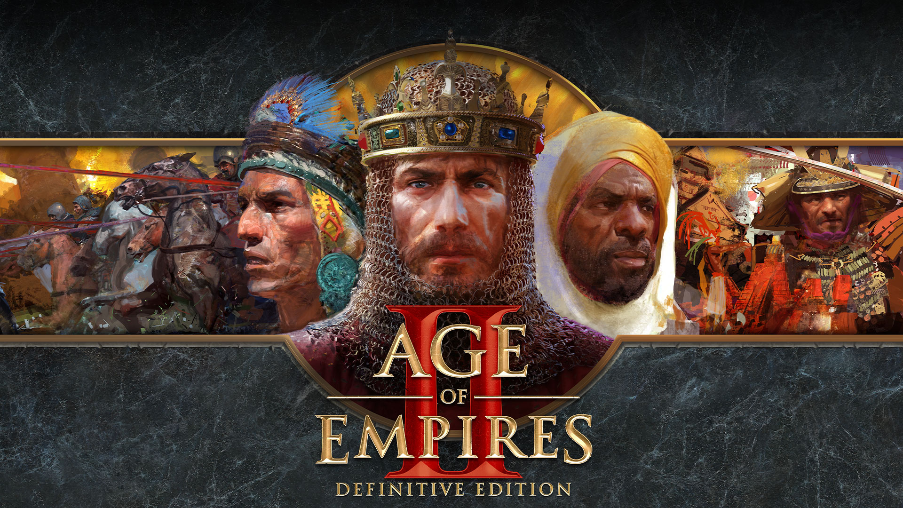

GryPC.PL
GryPC.PL
RTS
Strategiczna gra czasu rzeczywistego, z angielskiego "real-time strategy" - RTS, to gatunek gier komputerowych, będący modyfikacją turowych gier strategicznych, polegającą na niekrępowaniu graczy turami i kolejkami ruchów. Gracze mogą podejmować działania, kiedy chcą, natomiast skutki owych są widziane natychmiast. Gatunek ten stawia większy nacisk na szybkość podejmowania decyzji.
Wśród gier RTS wyróżnia się gry taktyczne czasu rzeczywistego, podgatunek lub odrębny gatunek charakteryzujący się większym naciskiem na decyzje taktyczne związane bliżej z samą walką niż gospodarcze decyzje strategiczne. Strategiczne gry czasu rzeczywistego mogą zawierać też elementy z gier RPG, jak choćby bohaterów zdobywających poziomy doświadczenia, jak np. w "Warcraft III: Reign of Chaos", czy "SpellForce".
Wśród gier RTS wyróżnia się gry taktyczne czasu rzeczywistego, podgatunek lub odrębny gatunek charakteryzujący się większym naciskiem na decyzje taktyczne związane bliżej z samą walką niż gospodarcze decyzje strategiczne. Strategiczne gry czasu rzeczywistego mogą zawierać też elementy z gier RPG, jak choćby bohaterów zdobywających poziomy doświadczenia, jak np. w "Warcraft III: Reign of Chaos", czy "SpellForce".
Pare przykładów:

"Warcraft III: Reign of Chaos" to strategiczna gra czasu rzeczywistego wydana w 2002 roku przez firmę Blizzard, będąca trzecią częścią cyklu Warcraft po "Warcraft: Orcs & Humans" i "Warcraft II: Tides of Darkness". Akcja gry rozgrywa się kilka lat po wydarzeniach z poprzedniej części w fantastycznym świecie Azeroth zamieszkiwanym przez takie istoty, jak elfy, orkowie oraz ludzie. Tłem fabuły jest walka tych ras przeciwko inwazji Płonącego Legionu wspieranego przez armię nieumarłych. W roku 2003 wydany został dodatek do gry, zatytułowany "Warcraft III: The Frozen Throne", a w roku 2004 gra MMORPG osadzona w świecie Azeroth – "World of Warcraft".
Jak w wielu grach z gatunku RTS, w Warcraft III gracze zbierają surowce, trenują jednostki do walki i budują swoją bazę aby osiągnąć ustalony cel lub pokonać przeciwnika. Dostępne frakcje to Ludzie i Orkowie znani z poprzednich części oraz pojawiający się po raz pierwszy Nieumarli i Nocne Elfy. Fabuła gry przedstawiona jest za pomocą czterech kolejnych kampanii. Możliwe jest rozgrywanie meczy z przeciwnikiem komputerowym lub innym graczem przez internet za pośrednictwem platformy Battle.net.
W 2018 roku, na imprezie BlizzCon organizowanej przez firmę Blizzard Entertainment została zapowiedziana odnowiona wersja gry Warcraft III. "Warcraft III: Reforged" wzbogacające grę o odświeżoną grafikę i nowe modele postaci ukazało się 28 stycznia 2020 roku.
Jak w wielu grach z gatunku RTS, w Warcraft III gracze zbierają surowce, trenują jednostki do walki i budują swoją bazę aby osiągnąć ustalony cel lub pokonać przeciwnika. Dostępne frakcje to Ludzie i Orkowie znani z poprzednich części oraz pojawiający się po raz pierwszy Nieumarli i Nocne Elfy. Fabuła gry przedstawiona jest za pomocą czterech kolejnych kampanii. Możliwe jest rozgrywanie meczy z przeciwnikiem komputerowym lub innym graczem przez internet za pośrednictwem platformy Battle.net.
W 2018 roku, na imprezie BlizzCon organizowanej przez firmę Blizzard Entertainment została zapowiedziana odnowiona wersja gry Warcraft III. "Warcraft III: Reforged" wzbogacające grę o odświeżoną grafikę i nowe modele postaci ukazało się 28 stycznia 2020 roku.

"StarCraft II: Wings of Liberty" (lub krócej StarCraft II) to strategia czasu rzeczywistego z elementami gry zręcznościowej, umieszczona w realiach science fiction, opracowana i wydana przez studio Blizzard Entertainment dla systemów operacyjnych Microsoft Windows i Mac OS X. Jest to sequel wielokrotnie nagradzanej gry o nazwie StarCraft i jej dodatku z 1998 roku. Wydany 27 lipca 2010 roku.
Początkowo wizja wydania gry bazowała tylko na jednym tytule, który miał zawierać kampanię dla każdej z ras, jednak na BlizzConie w 2008 roku Blizzard ogłosił, iż gra zostanie wydana jako trylogia. W wyniku tego gra została podzielona na 3 części: podstawową wersję "Wings of Liberty" oraz dwa pakiety rozszerzeń: wydane w 2013 roku "Heart of the Swarm" i wydane 2015 roku "Legacy of the Void", który został udostępniony jako samodzielna gra.
Gra rozgrywa się w XXV wieku w odległej części galaktyki Drogi Mlecznej, zwanej sektorem Koprulu i toczy się wokół trzech gatunków:
Terran, ludzkich zesłańców (opozycjonistów i malkontentów, uznanych przez rząd za zbędnych) z Ziemi;
Zergów, rasy będącej mieszanką gatunków rozwijających się na drodze adaptacji i mutacji
Protossów, gatunku o potężnych zdolnościach psionicznych i wysoce zaawansowanej technologii.
Wings of Liberty skupia się przede wszystkim na rasie terran, podczas gdy rozszerzenia "Heart of the Swarm" i "Legacy of the Void" koncentrują się odpowiednio na zergach i protossach. Akcja gry ma miejsce cztery lata po wydarzeniach ze "StarCraft: Brood War" i kontynuuje działania Jamesa „Jima” Raynora, prowadzącego grupę rebeliantów przeciwko autokratycznemu Dominium Terran. Gra zawiera zarówno nowe, jak i powracające postacie oraz lokacje z oryginalnej gry.
Gra spotkała się z bardzo pozytywnymi recenzjami od krytyków, otrzymując łączny wynik 93% od Metacritic. Podobnie jak poprzednia część, StarCraft II był chwalony za prowadzenie rozgrywki, jak również za wprowadzenie nowych elementów oraz poprawę przedstawiania historii. Jednak krytyka skierowała swoje niezadowolenie na funkcje, które istniały w oryginalnej grze StarCraft, lecz zostały usunięte w drugiej części, takie jak: brak możliwości gry przez sieć LAN czy decyzja o podzieleniu gry wieloosobowej na regiony. W chwili wydania, StarCraft II stał się najszybciej sprzedającą się grą RTS wszech czasów; w ciągu pierwszego miesiąca sprzedaży, gra rozeszła się w liczbie 3 milionów egzemplarzy na całym świecie. W listopadzie 2012 sprzedaż przekroczyła 6 milionów sztuk.
Podczas BlizzCon 2017 ogłoszono, że StarCraft II będzie dostępny w modelu bezpłatnego dostępu, czyli free-to-play. W wyniku tego od 14 listopada 2017 kampania "Wings of Liberty", pełny tryb wieloosobowy i dowódcy w trybie współpracy są dostępni za darmo. Ponadto Blizzard wspiera grę za pomocą mikrotransakcji dzięki sprzedaży skórek dla jednostek, dowódców kooperacyjnych, komentatorów oraz Łupów wojennych (wsparcie dla e-sportu).
Początkowo wizja wydania gry bazowała tylko na jednym tytule, który miał zawierać kampanię dla każdej z ras, jednak na BlizzConie w 2008 roku Blizzard ogłosił, iż gra zostanie wydana jako trylogia. W wyniku tego gra została podzielona na 3 części: podstawową wersję "Wings of Liberty" oraz dwa pakiety rozszerzeń: wydane w 2013 roku "Heart of the Swarm" i wydane 2015 roku "Legacy of the Void", który został udostępniony jako samodzielna gra.
Gra rozgrywa się w XXV wieku w odległej części galaktyki Drogi Mlecznej, zwanej sektorem Koprulu i toczy się wokół trzech gatunków:
Terran, ludzkich zesłańców (opozycjonistów i malkontentów, uznanych przez rząd za zbędnych) z Ziemi;
Zergów, rasy będącej mieszanką gatunków rozwijających się na drodze adaptacji i mutacji
Protossów, gatunku o potężnych zdolnościach psionicznych i wysoce zaawansowanej technologii.
Wings of Liberty skupia się przede wszystkim na rasie terran, podczas gdy rozszerzenia "Heart of the Swarm" i "Legacy of the Void" koncentrują się odpowiednio na zergach i protossach. Akcja gry ma miejsce cztery lata po wydarzeniach ze "StarCraft: Brood War" i kontynuuje działania Jamesa „Jima” Raynora, prowadzącego grupę rebeliantów przeciwko autokratycznemu Dominium Terran. Gra zawiera zarówno nowe, jak i powracające postacie oraz lokacje z oryginalnej gry.
Gra spotkała się z bardzo pozytywnymi recenzjami od krytyków, otrzymując łączny wynik 93% od Metacritic. Podobnie jak poprzednia część, StarCraft II był chwalony za prowadzenie rozgrywki, jak również za wprowadzenie nowych elementów oraz poprawę przedstawiania historii. Jednak krytyka skierowała swoje niezadowolenie na funkcje, które istniały w oryginalnej grze StarCraft, lecz zostały usunięte w drugiej części, takie jak: brak możliwości gry przez sieć LAN czy decyzja o podzieleniu gry wieloosobowej na regiony. W chwili wydania, StarCraft II stał się najszybciej sprzedającą się grą RTS wszech czasów; w ciągu pierwszego miesiąca sprzedaży, gra rozeszła się w liczbie 3 milionów egzemplarzy na całym świecie. W listopadzie 2012 sprzedaż przekroczyła 6 milionów sztuk.
Podczas BlizzCon 2017 ogłoszono, że StarCraft II będzie dostępny w modelu bezpłatnego dostępu, czyli free-to-play. W wyniku tego od 14 listopada 2017 kampania "Wings of Liberty", pełny tryb wieloosobowy i dowódcy w trybie współpracy są dostępni za darmo. Ponadto Blizzard wspiera grę za pomocą mikrotransakcji dzięki sprzedaży skórek dla jednostek, dowódców kooperacyjnych, komentatorów oraz Łupów wojennych (wsparcie dla e-sportu).

"Age of Empires II: The Age of Kings" to strategiczna gra wideo czasu rzeczywistego opracowana przez Ensemble Studios i wydana przez Microsoft. Wydana w 1999 roku na Microsoft Windows i Macintosh, jest drugą grą z serii Age of Empires. Akcja Age of Kings toczy się w średniowieczu i zawiera trzynaście grywalnych cywilizacji. Gracze dążą do gromadzenia zasobów, których używają do budowy miast, tworzenia armii i pokonywania wrogów. Istnieje pięć historycznych kampanii, które ograniczają gracza do wyspecjalizowanych i opartych na fabule warunków. Istnieją trzy dodatkowe tryby gry dla jednego gracza i obsługiwany jest tryb wieloosobowy.
Pomimo zastosowania tego samego silnika gry i podobnego kodu, co jego poprzednik, tworzenie The Age of Kings zajęło rok dłużej niż oczekiwano, co zmusiło Ensemble Studios do wydania "Age of Empires: The Rise of Rome" w 1998 roku. Zespół projektowy skupił się na rozwiązaniu istotnych problemów w Age of Empires, ale po wydaniu zauważył, że niektóre problemy pozostały.
Odbiór "The Age of Kings" był bardzo pozytywny. Chwalono znaczną liczbę nowych funkcji, a także ulepszenia rozgrywki. Według agregatora recenzji gier wideo Metacritic, "The Age of Kings" otrzymało „powszechne uznanie”. Trzy miesiące po premierze ukazały się dwa miliony egzemplarzy The Age of Kings, które osiągnęły szczyty sprzedaży w siedmiu krajach. Gra zdobyła wiele nagród i jest dziś uważana za klasyczną w swoim rodzaju, mając znaczący wpływ na przyszłe gry z tego gatunku. Oryginalny Age of Empires II i jego dodatek z 2000 roku, The Conquerors, zostały później wydane jako The Gold Edition. Age of Empires II jest obecnie uważane za jedną z najlepszych gier, jakie kiedykolwiek powstały.
Zaktualizowana wersja graficzna gry w wysokiej rozdzielczości, Age of Empires II: HD Edition, została wydana w 2013 roku. HD Edition zawiera oryginalną grę i rozszerzenie The Conquerors, a także nowe kampanie, cywilizacje i zaktualizowaną grafikę -resolution wyświetlacze. "Age of Empires II: Definitive Edition, remaster", ukazało się w listopadzie 2019 roku.
Pomimo zastosowania tego samego silnika gry i podobnego kodu, co jego poprzednik, tworzenie The Age of Kings zajęło rok dłużej niż oczekiwano, co zmusiło Ensemble Studios do wydania "Age of Empires: The Rise of Rome" w 1998 roku. Zespół projektowy skupił się na rozwiązaniu istotnych problemów w Age of Empires, ale po wydaniu zauważył, że niektóre problemy pozostały.
Odbiór "The Age of Kings" był bardzo pozytywny. Chwalono znaczną liczbę nowych funkcji, a także ulepszenia rozgrywki. Według agregatora recenzji gier wideo Metacritic, "The Age of Kings" otrzymało „powszechne uznanie”. Trzy miesiące po premierze ukazały się dwa miliony egzemplarzy The Age of Kings, które osiągnęły szczyty sprzedaży w siedmiu krajach. Gra zdobyła wiele nagród i jest dziś uważana za klasyczną w swoim rodzaju, mając znaczący wpływ na przyszłe gry z tego gatunku. Oryginalny Age of Empires II i jego dodatek z 2000 roku, The Conquerors, zostały później wydane jako The Gold Edition. Age of Empires II jest obecnie uważane za jedną z najlepszych gier, jakie kiedykolwiek powstały.
Zaktualizowana wersja graficzna gry w wysokiej rozdzielczości, Age of Empires II: HD Edition, została wydana w 2013 roku. HD Edition zawiera oryginalną grę i rozszerzenie The Conquerors, a także nowe kampanie, cywilizacje i zaktualizowaną grafikę -resolution wyświetlacze. "Age of Empires II: Definitive Edition, remaster", ukazało się w listopadzie 2019 roku.